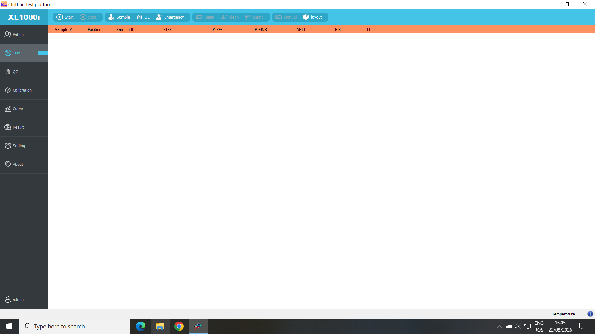
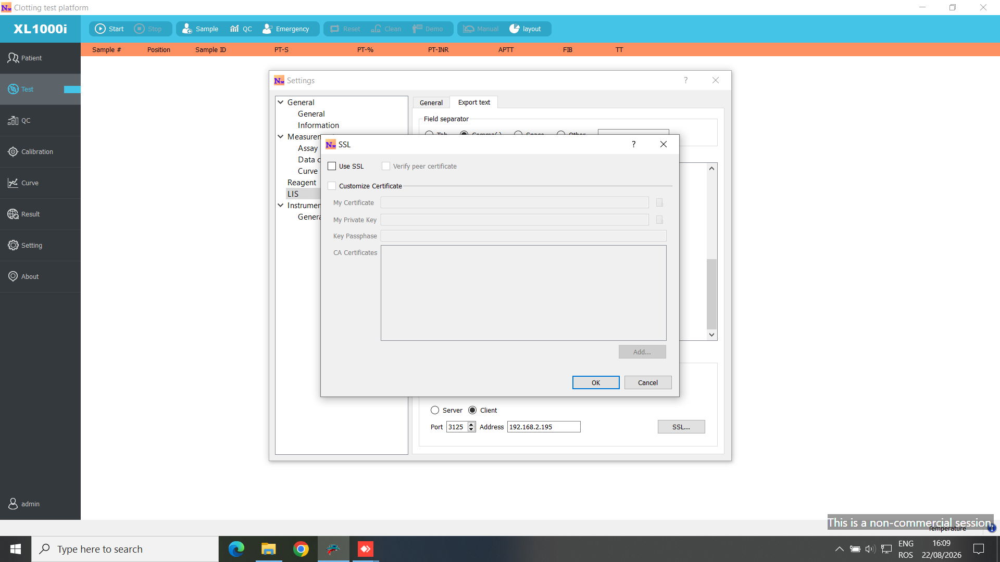
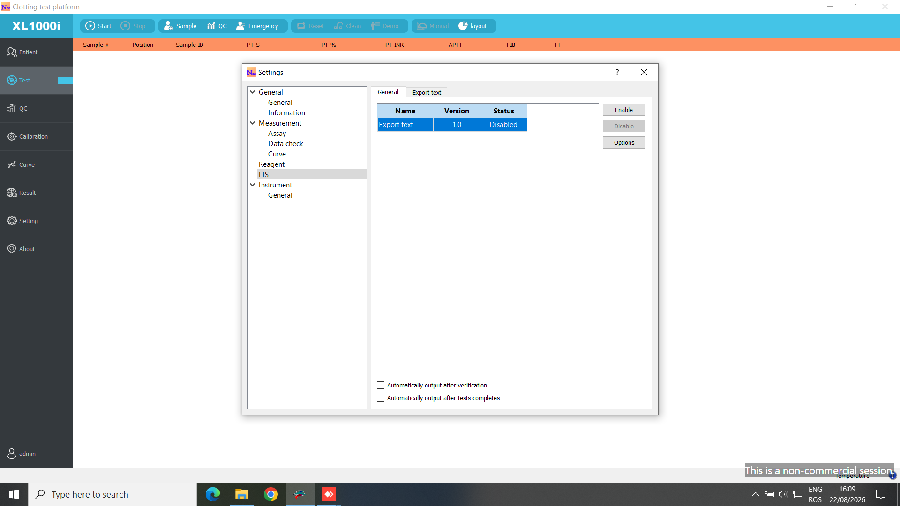
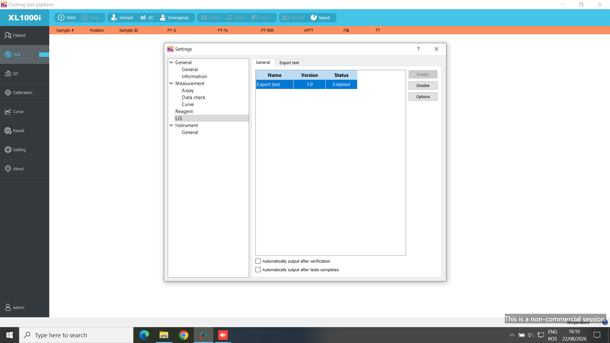
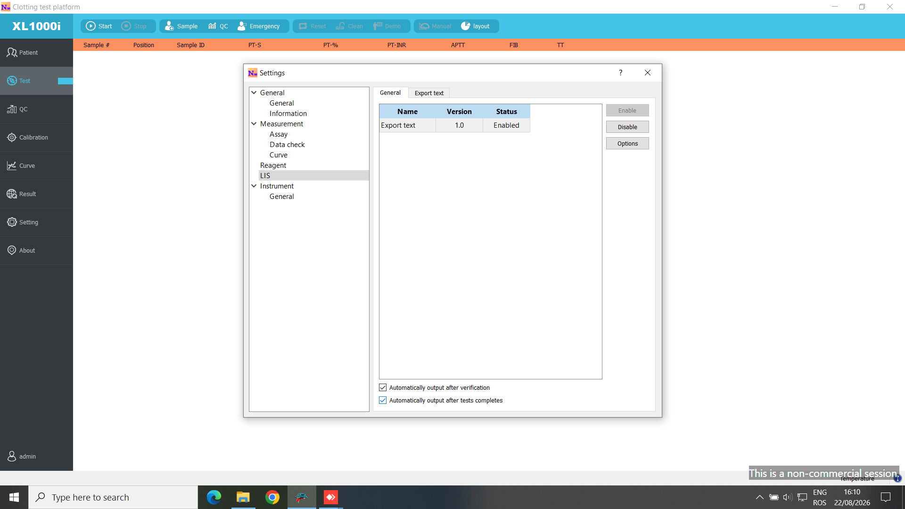
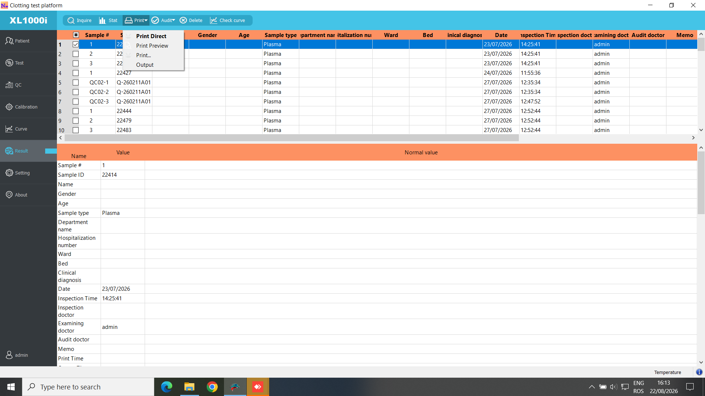

Ghid de configurare LIS pentru Zonci XL1000i si WiseMED. Readerul foloseste protocolul nativ Zonci, nu ASTM: mesajele sunt delimitate STX ... ETX.
Conditie obligatorie: pentru fiecare serviciu executat pe Zonci trebuie definita in WiseMED legatura cu echipamentul si codul de echipament. Fara cod, readerul raspunde corect la barcode, dar nu are ce test sa trimita analizorului.
Intrati in zona Settings a aplicatiei XL1000i, apoi in pagina de configurare LIS/Network prezentata in capturi.
Selectati rolul Client: analizorul initiaza conexiunea spre calculatorul care ruleaza WiseMED Reader.
La adresa introduceti IP-ul static al calculatorului cu readerul. Nu introduceti IP-ul analizorului.
La port introduceti 3125, sau portul configurat in reader la modules.transport-tcpip.port.
Salvati configurarea si verificati ca firewall-ul sistemului permite conexiuni TCP de intrare pe acel port.
Implicit, readerul asculta pe toate interfetele la 0.0.0.0:3125. Daca acel calculator are mai multe retele, folositi in Zonci IP-ul din reteaua analizorului.
3. Configurarea testelor
In ecranul de definire a testelor Zonci, retineti codul de comunicatie al fiecarui rezultat, de exemplu PT-S, PT-INR, APTT sau FIB.
In WiseMED, pentru serviciul/parametrul corespunzator, configurati echipamentul Zonci si acelasi tag de rezultat. Codul de echipament este codul trimis la comanda; tagul este codul rezultatului primit.
O analiza compusa trebuie sa aiba fiecare parametru care poate veni din aparat mapat individual. Exemplu: PT-S, PT-%, PTR si PT-INR sunt rezultate distincte.
Dupa salvare, verificati cu o fisa de test ca raspunsul readerului contine codurile asteptate in logul runtime.
4. Verificare dupa pornire
Porniti readerul cu -showlog.
Pe Zonci, introduceti sau scanati o proba cu barcode existent in WiseMED.
In log trebuie sa apara zonci-xl1000i rx ... 1 <barcode>, urmat de tx order ... tests=N.
Dupa efectuarea masuratorii, logul trebuie sa arate import ok sample_id=... results=N.
In Cereri analize, cererea apare imediat dupa interogare cu analizele trimise, apoi rezultatele sunt sincronizate fara a crea o fisa noua.
5. Alternativa seriala
Implementarea veche folosea serial 115200, 8N1. Pentru serial setati analyzer.comm_type: serial si modules.transport-serial.port. TCP ramane metoda recomandata, fiind configurata in capturile furnizate.
Capturi Zonci interpretate

1. Ecran principal. De aici se deschide zona Settings pentru configurarea LIS.

2. Conexiunea LIS. Selectati Client, apoi introduceti IP-ul readerului si portul 3125.

3. Lista/definirea testelor. Codurile rezultate trebuie sa corespunda tagurilor configurate in WiseMED.

4. Detaliile analizei. Verificati codul asociat rezultatului transmis prin LIS.

5. Parametri test. Parametrii raportati individual trebuie mapati individual in WiseMED.

6. Rezultate finalizate. Acesta este momentul in care Zonci trimite mesajul de rezultat catre reader.